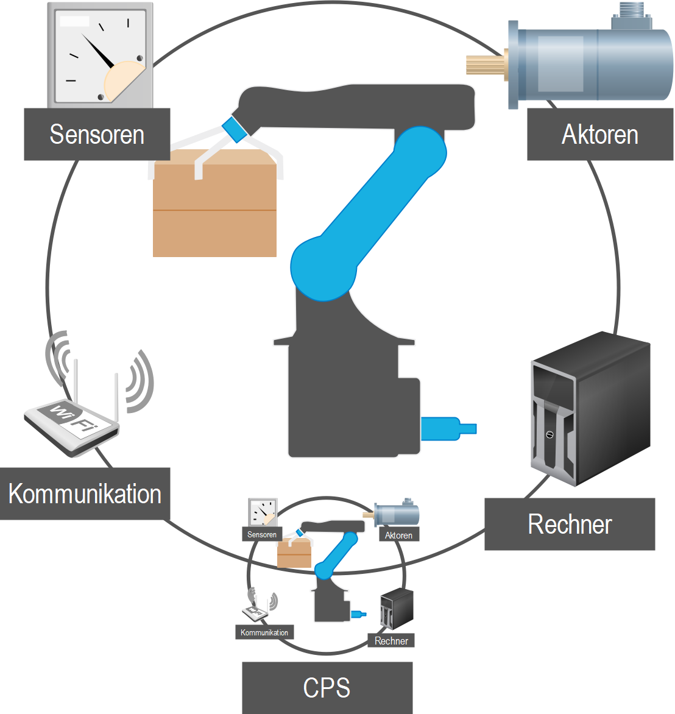

it's OWL Clustermanagement GmbH (Abgerufen 24.09.22) Zusammensetzung des Spitzenclusters "it's OWL"
Auch in Deutschland haben Industrie und Forschung zusammengeschlossen und Spitzencluster wie "it’s OWL" oder "microTEC Südwest" gebildet. Zu den Unternehmen gehören unter anderem Phoenix Contact, Dr. Oetker und DMG MORI (it’s OWL) und ABB, Bosch und Festo (microTEC Südwest).
Das linke Bild des organisatorischen Aufbaus des it’s OWL-Clusters soll aber nochmals verdeutlichen, das ganz im Sinne der individuellen Teilhabe nicht nur Industrie und Forschung dort für sich alleine zusammen arbeiten, sondern auch die Region an sich und auch kleinere und mittlere Unternehmen die Vereinsmitglieder sind durch spezielle Angebote an den entwickelten Technologien teilhaben können.
Das linke Bild des organisatorischen Aufbaus des it’s OWL-Clusters soll aber nochmals verdeutlichen, das ganz im Sinne der individuellen Teilhabe nicht nur Industrie und Forschung dort für sich alleine zusammen arbeiten, sondern auch die Region an sich und auch kleinere und mittlere Unternehmen die Vereinsmitglieder sind durch spezielle Angebote an den entwickelten Technologien teilhaben können.

Social Sidebar...
Ein CPS besteht normalerweise aus vier Bestandteilen. Hierzu gehören, wie im linken Bild zu sehen:
- Sensoren, um Einflüsse aus der Umwelt/Produktion zu messen und wahrzunehmen.
- Aktoren, um auf die Umwelt einzuwirken
- Kommunikationsschnittstellen, diese müssen nicht aus WLAN oder LAN bestehen und könnten bspw. auch mit RFID-Tags ausgestattet sein oder Bussysteme wie CAN nutzen.
- Rechnersystemen, die die von den Sensoren erhobenen Werte aufnehmen und ggf. verarbeiten, die Aktoren zu steuern und mit anderen Systemen zu kommunizieren.